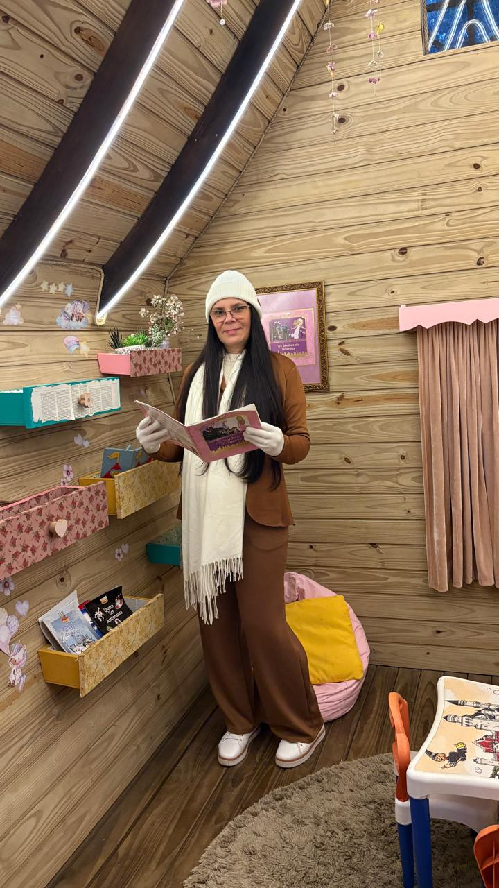
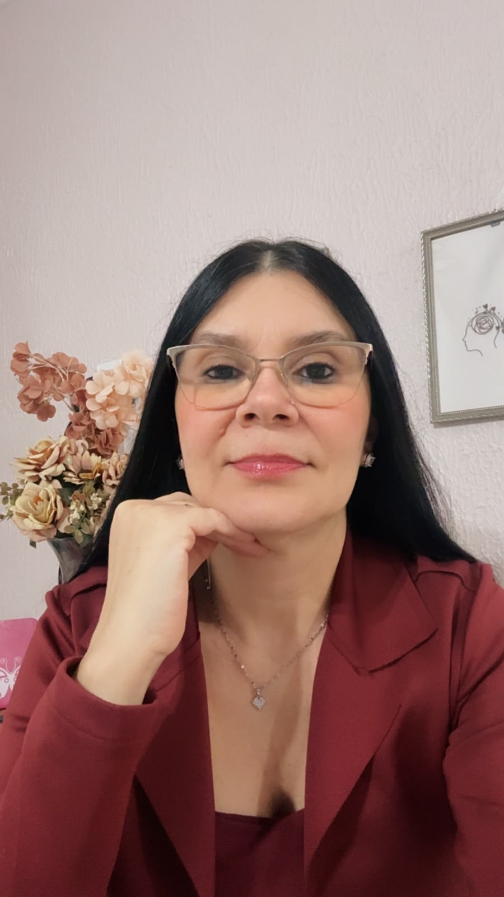

Minha trajetória mudou de direção.
Meu propósito continua: cuidar.
Sou Gilmara Martins Ferreira e quero que você me conheça um pouquinho mais por aqui.
O início no cuidado humano
Minha trajetória profissional começou na área da saúde, um caminho que me ensinou, desde cedo, que cuidar de alguém vai muito além de atender às suas necessidades físicas. É também saber acolher, escutar e compreender o ser humano em sua singularidade.
Iniciei minha formação como Cuidadora de Idosos, pelas Faculdades Integradas Simonsen, e posteriormente me formei como Técnica de Enfermagem, dando início a uma trajetória marcada pela busca constante por conhecimento e aperfeiçoamento.

Gilmara Martins Ferreira
Psicanalista Clínica · CBPC
2022-5953
Ao longo dos anos, atuei e me especializei em diferentes áreas da saúde, com destaque para CTI e UTI de Pediatria Oncológica, além de formações em oncologia pediátrica, atendimento a pacientes politraumatizados, triagem de enfermagem e suporte básico de vida (BLS), entre outras capacitações.
Foi justamente durante minha experiência na área hospitalar, especialmente no contato com crianças e famílias que enfrentavam momentos delicados, que algo despertou em mim de maneira profunda: o interesse pela psicoterapia e pela dimensão emocional do cuidado.
Percebi que, muitas vezes, cuidar do corpo não era suficiente. Existiam dores que não apareciam nos exames, medos que não podiam ser tratados com medicamentos e histórias que precisavam, antes de tudo, ser ouvidas.
Um caminho para a escuta
Foi então que decidi fazer uma transição de carreira, direcionando minha trajetória para a saúde mental.
Iniciei minha formação em Psicanálise Clínica e passei a me dedicar ao estudo do funcionamento psíquico, das relações humanas, das experiências da infância, dos traumas, das dores emocionais e dos conflitos que, muitas vezes, permanecem presentes mesmo quando acreditamos ter deixado o passado para trás.

Formação e aprendizado contínuo
Atualmente, sou Psicanalista Clínica, associada ao Conselho Brasileiro de Psicanálise Clínica, CBPC 2022-5953, e estou no 6º período do curso de Psicologia na Universidade UniGranRio, dando continuidade a uma formação que considero parte essencial da minha construção profissional.
Minha formação também inclui estudos complementares em áreas como Terapia Cognitivo-Comportamental (TCC), Transtorno do Espectro Autista (TEA), Psicologia da Educação, Psicologia Organizacional, Inteligência Emocional, Liderança, Gestão de Pessoas, Ética, Inclusão e Diversidade, Oratória e Apresentação em Público, além de cursos relacionados à gestão e à qualidade em serviços de saúde.
Hoje, minha experiência reúne diferentes olhares sobre o ser humano: a vivência na área da saúde, a formação em Psicanálise e a formação acadêmica em Psicologia.
Cuidar daquilo que não se vê
Acredito que cada pessoa carrega uma história que merece ser escutada sem julgamentos. Por isso, meu trabalho é construído a partir da escuta, do acolhimento e da compreensão da singularidade de cada sujeito.
Na Psicanálise, encontro um espaço onde a palavra pode revelar aquilo que, durante muito tempo, permaneceu silenciado. Afinal, algumas dores não precisam apenas ser suportadas — precisam encontrar um lugar onde possam ser compreendidas.
Minha trajetória mudou de direção, mas nunca mudou de propósito: cuidar.
Antes, pelo cuidado com o corpo.
Hoje, também pelo cuidado
com aquilo que não se vê.
Agende sua consulta
pelo WhatsApp
Dê o primeiro passo para cuidar de você. Entre em contato pelo WhatsApp para tirar dúvidas, consultar a disponibilidade de horários e obter informações sobre o atendimento.